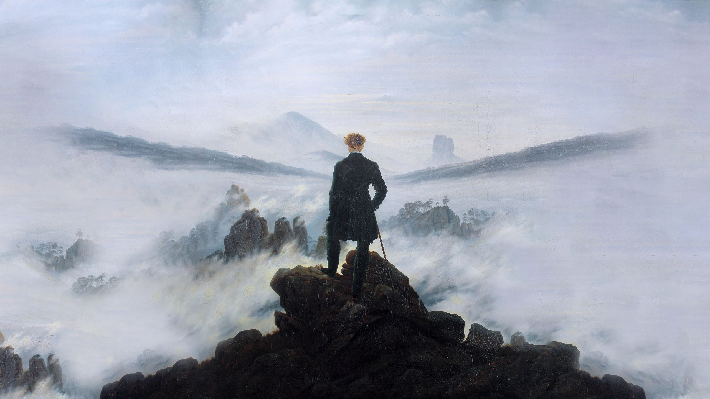

cyb3r17.space
Hi, I'm cyber, a 20 year old self-taught programmer and engineer with an interest in ai and electrical engineering. Currently pursuing an undergrad degree in AI & ML.
Apart from programming, I enjoy history, philosophy, RTS games, esotericism and peculiar music. I've been programming since 14, mainly in Python and C++, I'm currently learning RL and Rust.
This site aims to be both my personal portfolio and a corner on the internet for me to express myself.
Some more stuff about me:- I currently head a small AI research lab at my uni. Read more
- I like making unconventional projects to learn things. Watch here
- I will never learn a Javascript framework!!
- My interests lie in AI research, specifically computer vision and reinforcement learning.
- My first Linux distro was Raspbian.
Projects
- darkwire - Send bitcoin without the internet
- tinyrag - Lightweight RAG implementation for all your LLM endpoints
- wikitok - Scrollable wikipedia
- ICE - Intrusion Countermeasures Electronics | Basic server hardening for self hosters
- silverhand - A prosthetic arm I'm building for my friend
- And more... can be found on my GitHub
Publications/Press
- An article on darkwire by the decrypt. Read here
- More to come...
Donate
- cy@stacker.news (Lightning)
- 0x37463096697973Da2c9c3767a567B2fEf1459EcF
Built with html
© 2025 cyber | cyb3r17.spaceLinks


Site navigation
Banners
Use Temple OS

Read Revolt Against the Modern World
"An idiot admires complexity, a genius admires simplicity"
— Terry A Davis